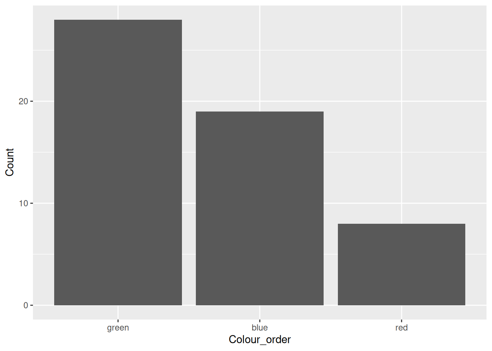

library(dplyr)
# Alternatively
# library(tidyverse)One of the fundamental building blocks of the tidyverse is the dplyr package. The dplyr package is now the primary package for data manipulation in R. Each of the functions that we look at in this chapter take a data frame as the first input argument, process it in a very simple way and return a data frame as the output. The dplyr package is loaded by default when we load the tidyverse package but we can also load it independently.
In accordance with the tidyverse spirit of functions doing one thing and doing it well, there are separate functions for subsetting rows and for subsetting columns.
6.1 Subsetting Rows: filter
The filter function allows us to apply a logical subset to the rows of our data. As with all the dplyr functions that we will use in this course, the filter function takes a data frame as the first argument and a logical statement as the second argument. Typically, we base the logical statement on columns within our data frame.
library(ggplot2)
dm <- haven::read_sas("data/dm.sas7bdat")
act <- haven::read_sas("data/act.sas7bdat")
vs <- haven::read_sas("data/vs.sas7bdat")# Find subjects taking GSK drug. Note the double-equals
gsk_subj <- filter(dm, ARM == "GSK")
gsk_subj# A tibble: 12 × 7
USUBJID AGE SEX COUNTRY RACE ETHNIC ARM
<chr> <dbl> <chr> <chr> <chr> <chr> <chr>
1 STD123456:000008 53 M GER WHITE NOT HIS… GSK
2 STD123456:000009 60 F USA WHITE NOT HIS… GSK
3 STD123456:000011 66 F USA WHITE NOT HIS… GSK
4 STD123456:000012 26 M FRA BLACK OR AFRICAN AMERICAN NOT HIS… GSK
5 STD123456:000013 51 F IRE WHITE HISPANI… GSK
6 STD123456:000015 59 F FRA WHITE HISPANI… GSK
7 STD123456:000017 28 F FRA WHITE NOT HIS… GSK
8 STD123456:000019 48 F USA WHITE NOT HIS… GSK
9 STD123456:000022 46 M GER WHITE NOT HIS… GSK
10 STD123456:000025 48 F USA WHITE NOT HIS… GSK
11 STD123456:000026 71 F FRA WHITE NOT HIS… GSK
12 STD123456:000028 67 M IRE WHITE HISPANI… GSK 6.1.1 Logic
In the example above we used a double equals in order to ask the question, “is the ARM variable equal to ‘GSK’ (for each record)?” In R a single equals assigns the value on the right to the parameter on the left. We must therefore always use a double equals when asking the logical question, is x equal to y!!!
The table below lists some essential logical operations.
| Code | Meaning |
|---|---|
| == | Equal to |
| != | Not equal to |
| > | Greater than |
| >= | Greater than or equal to |
| < | Less than |
| <= | Less than or equal to |
| & | And - for joining logical statements |
| | | Or - for joining locical statements |
| ! | Not - for switching TRUE and FALSE statements around |
| %in% | One of - Can any of the values on the LHS of the %in% be found on the RHS? |
| any | Summarises multiple logical statements into a single value - Are ANY of these values equal to TRUE? |
| all | Summarises multiple logical statements into a single value - Are ALL of these values equal to TRUE? |
6.1.2 Applying Multiple filter Operations
The filter function let’s us chain multiple logical questions together using commas. The commas are equivalent to using an “and” operation.
# Find subjects taking GSK drug in USA
gsk_subj_USA <- filter(dm, ARM == "GSK", COUNTRY == "USA")
gsk_subj_USA# A tibble: 4 × 7
USUBJID AGE SEX COUNTRY RACE ETHNIC ARM
<chr> <dbl> <chr> <chr> <chr> <chr> <chr>
1 STD123456:000009 60 F USA WHITE NOT HISPANIC OR LATINO GSK
2 STD123456:000011 66 F USA WHITE NOT HISPANIC OR LATINO GSK
3 STD123456:000019 48 F USA WHITE NOT HISPANIC OR LATINO GSK
4 STD123456:000025 48 F USA WHITE NOT HISPANIC OR LATINO GSK # Or equivalently
gsk_subj_USA <- filter(dm, ARM == "GSK" & COUNTRY == "USA")The following example uses an “or” link.
# Find females over 50 in France or Germany
filter(dm, SEX=="F", AGE > 50, COUNTRY == "FRA" | COUNTRY == "GER")# A tibble: 2 × 7
USUBJID AGE SEX COUNTRY RACE ETHNIC ARM
<chr> <dbl> <chr> <chr> <chr> <chr> <chr>
1 STD123456:000015 59 F FRA WHITE HISPANIC OR LATINO GSK
2 STD123456:000026 71 F FRA WHITE NOT HISPANIC OR LATINO GSK Finally, here is an example using the %in% operator. Although it looks a little ugly, this function is the same as an “in” in SQL or SAS. In other words “are any of the values on the left hand side contained within the values on the right hand side”?
# Find females over 50 in France or Germany
filter(dm, SEX=="F", AGE > 50, COUNTRY %in% c("FRA", "GER"))# A tibble: 2 × 7
USUBJID AGE SEX COUNTRY RACE ETHNIC ARM
<chr> <dbl> <chr> <chr> <chr> <chr> <chr>
1 STD123456:000015 59 F FRA WHITE HISPANIC OR LATINO GSK
2 STD123456:000026 71 F FRA WHITE NOT HISPANIC OR LATINO GSK 6.1.3 Any and All
The any and all functions condense any number of logical values into a single TRUE or FALSE value. At this stage of the course they are not much use but we will look at them a little closer later on.
# Some logical values
some_logic <- c(T, T, F)
some_logic[1] TRUE TRUE FALSE# Are any of these values TRUE?
any(some_logic)[1] TRUE# Excellent. Are they all TRUE?
all(some_logic)[1] FALSE6.2 Extract Rows by Number: slice
The slice function lets us choose records by row number. It can be useful for looking at the first or last few records in a data frame. In the second example below the utility function, n, is used to pick out the last few rows. This utility is not a generic utility and can only be used within a handful of dplyr functions.
# First 3 rows of dm
slice(dm, 1:3)# A tibble: 3 × 7
USUBJID AGE SEX COUNTRY RACE ETHNIC ARM
<chr> <dbl> <chr> <chr> <chr> <chr> <chr>
1 STD123456:000001 32 F UK BLACK OR AFRICAN AMERICAN NOT HISP… Comp…
2 STD123456:000002 28 M FRA WHITE NOT HISP… Comp…
3 STD123456:000003 55 M USA BLACK OR AFRICAN AMERICAN NOT HISP… Comp…# Last 3 rows of dm (using the utility function, n())
slice(dm, (n() - 2):n())# A tibble: 3 × 7
USUBJID AGE SEX COUNTRY RACE ETHNIC ARM
<chr> <dbl> <chr> <chr> <chr> <chr> <chr>
1 STD123456:000028 67 M IRE WHITE HISPANIC OR LATINO GSK
2 STD123456:000029 68 F UK WHITE NOT HISPANIC OR LATINO Comparator
3 STD123456:000030 71 M USA WHITE NOT HISPANIC OR LATINO Comparator6.3 Removing Duplicates: distinct
We can often find ourselves in a situation where we end up with duplicate or partial duplicates, eg following a merge. The distinct function is a useful utility that can help us to identify unique values and/or remove duplicates.
# Duplicate records
dup_data <- tibble(USUBJID = rep(c("STD123456:000001", "STD123456:000002"), c(3, 5)),
AGE = rep(c(32, 28), c(3, 5)))
dup_data# A tibble: 8 × 2
USUBJID AGE
<chr> <dbl>
1 STD123456:000001 32
2 STD123456:000001 32
3 STD123456:000001 32
4 STD123456:000002 28
5 STD123456:000002 28
6 STD123456:000002 28
7 STD123456:000002 28
8 STD123456:000002 28# Remove duplicate records
distinct(dup_data)# A tibble: 2 × 2
USUBJID AGE
<chr> <dbl>
1 STD123456:000001 32
2 STD123456:000002 28We can also use distinct to find all the unique combinations of specific variables. For example the unique combinations of ‘COUNTRY’ and ‘ARM’. By default, the function drops all of the other variables that we’re not interested. But we can also choose to keep them. In the example below, this retains the first record for each unique combination of ‘COUNTRY’ and ‘ARM’, which is not particularly useful. But it could be used to identify baseline records for each unique subject.
# Find unique combinations
distinct(dm, COUNTRY, ARM)# A tibble: 9 × 2
COUNTRY ARM
<chr> <chr>
1 UK Comparator
2 FRA Comparator
3 USA Comparator
4 GER Comparator
5 IRE Comparator
6 GER GSK
7 USA GSK
8 FRA GSK
9 IRE GSK # Find unique combinations and keep the first instance of each
distinct(dm, COUNTRY, ARM, .keep_all = TRUE)# A tibble: 9 × 7
USUBJID AGE SEX COUNTRY RACE ETHNIC ARM
<chr> <dbl> <chr> <chr> <chr> <chr> <chr>
1 STD123456:000001 32 F UK BLACK OR AFRICAN AMERICAN NOT HISP… Comp…
2 STD123456:000002 28 M FRA WHITE NOT HISP… Comp…
3 STD123456:000003 55 M USA BLACK OR AFRICAN AMERICAN NOT HISP… Comp…
4 STD123456:000004 35 F GER WHITE HISPANIC… Comp…
5 STD123456:000005 30 F IRE WHITE NOT HISP… Comp…
6 STD123456:000008 53 M GER WHITE NOT HISP… GSK
7 STD123456:000009 60 F USA WHITE NOT HISP… GSK
8 STD123456:000012 26 M FRA BLACK OR AFRICAN AMERICAN NOT HISP… GSK
9 STD123456:000013 51 F IRE WHITE HISPANIC… GSK 6.4 Subsetting Columns: select
For column-wise operations we use the select function. Much like when writing SQL, we simply provide the function a data frame to select columns from and then a bunch of columns that we wish to select (or “keep”).
# Our GSK, USA Subjects from earlier
gsk_subj_USA# A tibble: 4 × 7
USUBJID AGE SEX COUNTRY RACE ETHNIC ARM
<chr> <dbl> <chr> <chr> <chr> <chr> <chr>
1 STD123456:000009 60 F USA WHITE NOT HISPANIC OR LATINO GSK
2 STD123456:000011 66 F USA WHITE NOT HISPANIC OR LATINO GSK
3 STD123456:000019 48 F USA WHITE NOT HISPANIC OR LATINO GSK
4 STD123456:000025 48 F USA WHITE NOT HISPANIC OR LATINO GSK # Now that we have GSK subjects in USA we don't need ARM or COUNTRY
select(gsk_subj_USA, USUBJID, AGE, SEX)# A tibble: 4 × 3
USUBJID AGE SEX
<chr> <dbl> <chr>
1 STD123456:000009 60 F
2 STD123456:000011 66 F
3 STD123456:000019 48 F
4 STD123456:000025 48 F We can also use the select function to drop columns by putting a minus sign in front of any columns that we provide.
# Now that we have GSK subjects in USA we don't need ARM or COUNTRY
select(gsk_subj_USA, -ARM, -COUNTRY)# A tibble: 4 × 5
USUBJID AGE SEX RACE ETHNIC
<chr> <dbl> <chr> <chr> <chr>
1 STD123456:000009 60 F WHITE NOT HISPANIC OR LATINO
2 STD123456:000011 66 F WHITE NOT HISPANIC OR LATINO
3 STD123456:000019 48 F WHITE NOT HISPANIC OR LATINO
4 STD123456:000025 48 F WHITE NOT HISPANIC OR LATINOObviously we cannot mix and match dropping and keeping variables.
6.4.1 Utility Functions in Select
The select function comes with a number of built in utility functions (the tidy-select functions, ?dplyr_tidy_select). The functions are there to enable us to select columns more quickly, for example all of the columns that contain a particular word. These functions can only be called from within select and a handful of other tidyverse functions. They cannot be called directly.
starts_withends_withcontainsmatchesone_ofeverything- …
To use these utility functions we simply call them in place of a named column(s). For example, here we select all columns that begin with the letters “ACT”:
select(act, starts_with("ACT"))# A tibble: 165 × 5
ACT0101 ACT0102 ACT0103 ACT0104 ACT0105
<dbl> <dbl> <dbl> <dbl> <dbl>
1 5 2 3 3 3
2 5 2 3 3 3
3 3 4 3 2 1
4 3 3 4 3 2
5 3 5 1 2 3
6 3 5 3 3 3
7 3 3 3 3 3
8 3 3 3 3 3
9 3 3 3 4 4
10 4 4 4 4 4
# ℹ 155 more rowsWe can also use a : to select all columns between the column on the left of the : and the column on the right of the :.
select(dm, AGE:COUNTRY)# A tibble: 30 × 3
AGE SEX COUNTRY
<dbl> <chr> <chr>
1 32 F UK
2 28 M FRA
3 55 M USA
4 35 F GER
5 30 F IRE
6 22 F GER
7 59 F USA
8 53 M GER
9 60 F USA
10 48 M USA
# ℹ 20 more rowsIt is again important to note that although : can be used outside of the select function, the way we have used it to specify columns is unique to this use case. In other words we can’t write “A”:“Z” or similar.
6.5 Column Order
As well as subsetting columns, we can use select to move columns around (e.g. after a merge). Here we use the everything helper to move the ‘ARM’ column to the left and then keep ‘everything else’ as it was.
select(dm, ARM, everything())# A tibble: 30 × 7
ARM USUBJID AGE SEX COUNTRY RACE ETHNIC
<chr> <chr> <dbl> <chr> <chr> <chr> <chr>
1 Comparator STD123456:000001 32 F UK BLACK OR AFRICAN AMER… NOT H…
2 Comparator STD123456:000002 28 M FRA WHITE NOT H…
3 Comparator STD123456:000003 55 M USA BLACK OR AFRICAN AMER… NOT H…
4 Comparator STD123456:000004 35 F GER WHITE HISPA…
5 Comparator STD123456:000005 30 F IRE WHITE NOT H…
6 Comparator STD123456:000006 22 F GER WHITE NOT H…
7 Comparator STD123456:000007 59 F USA WHITE NOT H…
8 GSK STD123456:000008 53 M GER WHITE NOT H…
9 GSK STD123456:000009 60 F USA WHITE NOT H…
10 Comparator STD123456:000010 48 M USA WHITE NOT H…
# ℹ 20 more rowsThe relocate function is another relatively recent addition to dplyr that provides finer control when moving columns. Arguments .before and .after let us specify exactly where one or more columns are to be located.
relocate(dm, ARM, .after = USUBJID)# A tibble: 30 × 7
USUBJID ARM AGE SEX COUNTRY RACE ETHNIC
<chr> <chr> <dbl> <chr> <chr> <chr> <chr>
1 STD123456:000001 Comparator 32 F UK BLACK OR AFRICAN AMER… NOT H…
2 STD123456:000002 Comparator 28 M FRA WHITE NOT H…
3 STD123456:000003 Comparator 55 M USA BLACK OR AFRICAN AMER… NOT H…
4 STD123456:000004 Comparator 35 F GER WHITE HISPA…
5 STD123456:000005 Comparator 30 F IRE WHITE NOT H…
6 STD123456:000006 Comparator 22 F GER WHITE NOT H…
7 STD123456:000007 Comparator 59 F USA WHITE NOT H…
8 STD123456:000008 GSK 53 M GER WHITE NOT H…
9 STD123456:000009 GSK 60 F USA WHITE NOT H…
10 STD123456:000010 Comparator 48 M USA WHITE NOT H…
# ℹ 20 more rows# Alternatively
#relocate(dm, AGE:COUNTRY, .after = ARM)6.6 Sorting
In general, tidyverse functions are named well and hence easy to remember. Unfortunately, sort and order already exist as R functions and so in the tidyverse we work with arrange! As with most of the tidyverse functions it is very easy to use. In this first example we use the arrange function to sort the demography data by age.
# Sort young to old
arrange(dm, AGE)# A tibble: 30 × 7
USUBJID AGE SEX COUNTRY RACE ETHNIC ARM
<chr> <dbl> <chr> <chr> <chr> <chr> <chr>
1 STD123456:000006 22 F GER WHITE NOT HIS… Comp…
2 STD123456:000012 26 M FRA BLACK OR AFRICAN AMERICAN NOT HIS… GSK
3 STD123456:000002 28 M FRA WHITE NOT HIS… Comp…
4 STD123456:000017 28 F FRA WHITE NOT HIS… GSK
5 STD123456:000023 28 F IRE BLACK OR AFRICAN AMERICAN NOT HIS… Comp…
6 STD123456:000005 30 F IRE WHITE NOT HIS… Comp…
7 STD123456:000001 32 F UK BLACK OR AFRICAN AMERICAN NOT HIS… Comp…
8 STD123456:000004 35 F GER WHITE HISPANI… Comp…
9 STD123456:000022 46 M GER WHITE NOT HIS… GSK
10 STD123456:000010 48 M USA WHITE NOT HIS… Comp…
# ℹ 20 more rowsFor a descending sort we call the utility function, desc, around the variable that we’re sorting by.
# Sort old to young
arrange(dm, desc(AGE))# A tibble: 30 × 7
USUBJID AGE SEX COUNTRY RACE ETHNIC ARM
<chr> <dbl> <chr> <chr> <chr> <chr> <chr>
1 STD123456:000026 71 F FRA WHITE NOT HIS… GSK
2 STD123456:000030 71 M USA WHITE NOT HIS… Comp…
3 STD123456:000018 69 F IRE WHITE NOT HIS… Comp…
4 STD123456:000029 68 F UK WHITE NOT HIS… Comp…
5 STD123456:000027 67 F IRE ASIAN NOT HIS… Comp…
6 STD123456:000028 67 M IRE WHITE HISPANI… GSK
7 STD123456:000011 66 F USA WHITE NOT HIS… GSK
8 STD123456:000020 64 M FRA BLACK OR AFRICAN AMERICAN NOT HIS… Comp…
9 STD123456:000009 60 F USA WHITE NOT HIS… GSK
10 STD123456:000007 59 F USA WHITE NOT HIS… Comp…
# ℹ 20 more rowsWe can sort by as many variables as we have in our data. We can also sort by categorical variables, which are ordered alphabetically in the sort.
# Sort by multiple variables
arrange(dm, desc(ARM), COUNTRY, desc(AGE))# A tibble: 30 × 7
USUBJID AGE SEX COUNTRY RACE ETHNIC ARM
<chr> <dbl> <chr> <chr> <chr> <chr> <chr>
1 STD123456:000026 71 F FRA WHITE NOT HIS… GSK
2 STD123456:000015 59 F FRA WHITE HISPANI… GSK
3 STD123456:000017 28 F FRA WHITE NOT HIS… GSK
4 STD123456:000012 26 M FRA BLACK OR AFRICAN AMERICAN NOT HIS… GSK
5 STD123456:000008 53 M GER WHITE NOT HIS… GSK
6 STD123456:000022 46 M GER WHITE NOT HIS… GSK
7 STD123456:000028 67 M IRE WHITE HISPANI… GSK
8 STD123456:000013 51 F IRE WHITE HISPANI… GSK
9 STD123456:000011 66 F USA WHITE NOT HIS… GSK
10 STD123456:000009 60 F USA WHITE NOT HIS… GSK
# ℹ 20 more rowsLater we will see how we can manipulate the sort order for categorical variables using factors.
6.7 EXERCISE
- Using the
actdata, extract all data for subject 5 - Extract all screening and randomisation visits from the
actdata - Select the
USUBJID,VISITNUMandVISITcolumns - Remove the date (
QSDTC) column - Sort the data by
USUBJIDand descendingVISITNUM
6.8 Creating New Columns: mutate
The mutate function allows us to create new columns within our data. We typically do so by manipulating other columns in the data but we can define our columns in any way we like.
# Create a new column that is the square of the height column
mutate(vs, Height_sq = HEIGHT ^2)# A tibble: 30 × 4
USUBJID HEIGHT WEIGHT Height_sq
<chr> <dbl> <dbl> <dbl>
1 STD123456:000001 165 88 27225
2 STD123456:000002 179 100 32041
3 STD123456:000003 182 81 33124
4 STD123456:000004 166 91 27556
5 STD123456:000005 169 73.6 28561
6 STD123456:000006 164 66 26896
7 STD123456:000007 157 107 24649
8 STD123456:000008 189 101 35721
9 STD123456:000009 155 54.1 24025
10 STD123456:000010 171 88 29241
# ℹ 20 more rows# Create a new flag variable with the value 1
mutate(vs, flag = 1)# A tibble: 30 × 4
USUBJID HEIGHT WEIGHT flag
<chr> <dbl> <dbl> <dbl>
1 STD123456:000001 165 88 1
2 STD123456:000002 179 100 1
3 STD123456:000003 182 81 1
4 STD123456:000004 166 91 1
5 STD123456:000005 169 73.6 1
6 STD123456:000006 164 66 1
7 STD123456:000007 157 107 1
8 STD123456:000008 189 101 1
9 STD123456:000009 155 54.1 1
10 STD123456:000010 171 88 1
# ℹ 20 more rowsOne nice property of the mutate function is that it allows us to immediately use columns that we create, much like SAS.
mutate(vs,
Height_m2 = (HEIGHT/100) ^2,
BMI = WEIGHT / Height_m2)# A tibble: 30 × 5
USUBJID HEIGHT WEIGHT Height_m2 BMI
<chr> <dbl> <dbl> <dbl> <dbl>
1 STD123456:000001 165 88 2.72 32.3
2 STD123456:000002 179 100 3.20 31.2
3 STD123456:000003 182 81 3.31 24.5
4 STD123456:000004 166 91 2.76 33.0
5 STD123456:000005 169 73.6 2.86 25.8
6 STD123456:000006 164 66 2.69 24.5
7 STD123456:000007 157 107 2.46 43.4
8 STD123456:000008 189 101 3.57 28.3
9 STD123456:000009 155 54.1 2.40 22.5
10 STD123456:000010 171 88 2.92 30.1
# ℹ 20 more rowsIn the above example we have used some very simple numerical transformations. In the following sections we will look at some other useful functions for working with data. Each of the functions that we see are designed to work with vectors (columns of data). We can therefore call them all via the mutate function.
6.9 Renaming Columns
In the example below we rename the “COUNTRY” column, “LOCATION”. As we shall see later when creating new columns, the new name of the new column is placed to the left of the equals and the old name on the right.
# Rename the COUNTRY column to LOCATION - New name on the left!!!
rename(dm, LOCATION = COUNTRY)# A tibble: 30 × 7
USUBJID AGE SEX LOCATION RACE ETHNIC ARM
<chr> <dbl> <chr> <chr> <chr> <chr> <chr>
1 STD123456:000001 32 F UK BLACK OR AFRICAN AMERICAN NOT HI… Comp…
2 STD123456:000002 28 M FRA WHITE NOT HI… Comp…
3 STD123456:000003 55 M USA BLACK OR AFRICAN AMERICAN NOT HI… Comp…
4 STD123456:000004 35 F GER WHITE HISPAN… Comp…
5 STD123456:000005 30 F IRE WHITE NOT HI… Comp…
6 STD123456:000006 22 F GER WHITE NOT HI… Comp…
7 STD123456:000007 59 F USA WHITE NOT HI… Comp…
8 STD123456:000008 53 M GER WHITE NOT HI… GSK
9 STD123456:000009 60 F USA WHITE NOT HI… GSK
10 STD123456:000010 48 M USA WHITE NOT HI… Comp…
# ℹ 20 more rowsFurther columns can be renamed by using a comma to separate each pair of new and old names.
# Rename two columns - New name on the left!!!
rename(dm, LOCATION = COUNTRY, TREATMENT = ARM)# A tibble: 30 × 7
USUBJID AGE SEX LOCATION RACE ETHNIC TREATMENT
<chr> <dbl> <chr> <chr> <chr> <chr> <chr>
1 STD123456:000001 32 F UK BLACK OR AFRICAN AMER… NOT H… Comparat…
2 STD123456:000002 28 M FRA WHITE NOT H… Comparat…
3 STD123456:000003 55 M USA BLACK OR AFRICAN AMER… NOT H… Comparat…
4 STD123456:000004 35 F GER WHITE HISPA… Comparat…
5 STD123456:000005 30 F IRE WHITE NOT H… Comparat…
6 STD123456:000006 22 F GER WHITE NOT H… Comparat…
7 STD123456:000007 59 F USA WHITE NOT H… Comparat…
8 STD123456:000008 53 M GER WHITE NOT H… GSK
9 STD123456:000009 60 F USA WHITE NOT H… GSK
10 STD123456:000010 48 M USA WHITE NOT H… Comparat…
# ℹ 20 more rows6.10 Creating Categories: cut
The cut function allows us to create a discrete variable by partitioning a continuous one. The first argument to the function is the continuous vector/variable that we wish to partition. We must then either specify a number of cut points (and let R choose the cuts for us) or provide a vector of specific cut points (including minimum and maximum values). For example, here we divide the AGE variable into two groups, 18-50 and 50+.
# Extract the AGE column as a vector (not required if using mutate!)
AGE <- pull(dm, AGE)
# Partition into two groups
cut(AGE, c(18, 50, Inf)) [1] (18,50] (18,50] (50,Inf] (18,50] (18,50] (18,50] (50,Inf] (50,Inf]
[9] (50,Inf] (18,50] (50,Inf] (18,50] (50,Inf] (18,50] (50,Inf] (50,Inf]
[17] (18,50] (50,Inf] (18,50] (50,Inf] (50,Inf] (18,50] (18,50] (18,50]
[25] (18,50] (50,Inf] (50,Inf] (50,Inf] (50,Inf] (50,Inf]
Levels: (18,50] (50,Inf]By default, any data points lying on the boundary are included in the lower grouping. This is controlled by an argument to the cut function, right. If we want to include boundary values to be included in the higher grouping we set right = FALSE.
# Include 50 years olds in the older group
age_cat <- cut(AGE, c(18, 50, Inf), right = FALSE)
age_cat [1] [18,50) [18,50) [50,Inf) [18,50) [18,50) [18,50) [50,Inf) [50,Inf)
[9] [50,Inf) [18,50) [50,Inf) [18,50) [50,Inf) [18,50) [50,Inf) [50,Inf)
[17] [18,50) [50,Inf) [18,50) [50,Inf) [50,Inf) [18,50) [18,50) [50,Inf)
[25] [18,50) [50,Inf) [50,Inf) [50,Inf) [50,Inf) [50,Inf)
Levels: [18,50) [50,Inf)We can add nicer labels to our cut by using the labels argument.
around50 <- filter(dm, 48 <= AGE, AGE <= 52)
mutate(around50,
AgeCat1 = cut(AGE, c(18, 50, Inf), labels = c("<=50", ">50")),
AgeCat2 = cut(AGE, c(18, 50, Inf), labels = c("<50", ">=50"),
right = FALSE)) # A tibble: 6 × 9
USUBJID AGE SEX COUNTRY RACE ETHNIC ARM AgeCat1 AgeCat2
<chr> <dbl> <chr> <chr> <chr> <chr> <chr> <fct> <fct>
1 STD123456:000010 48 M USA WHITE NOT HISPANIC… Comp… <=50 <50
2 STD123456:000013 51 F IRE WHITE HISPANIC OR … GSK >50 >=50
3 STD123456:000014 48 F USA WHITE HISPANIC OR … Comp… <=50 <50
4 STD123456:000019 48 F USA WHITE NOT HISPANIC… GSK <=50 <50
5 STD123456:000024 50 F FRA WHITE NOT HISPANIC… Comp… <=50 >=50
6 STD123456:000025 48 F USA WHITE NOT HISPANIC… GSK <=50 <50 6.11 Factors and the forcats Package
The cut function turns a continuous variable into a categorical variable by creating a “factor”. Factors are essentially a code-decode paring where the code is an integer value from 1 to the number of levels, and the decode is a format that controls how these decodes are displayed. We can turn any variable into a factor by using the factor function. Factor variables are displayed as <fctr> when printing a data frame.
# Extract the SEX column and convert to a factor
SEX <- pull(dm, SEX)
SEX <- factor(SEX)
SEX [1] F M M F F F F M F M F M F F F F F F F M M M F F F F F M F M
Levels: F M6.11.1 The forcats Package
Creating a factors is easy, but the real benefit comes from being able to manipulate the factor “levels” in order to either control the sort order or to combine levels. All of the required functionality is contained within the forcats package. We start by loading the package, which is installed with the tidyverse but which must always be loaded separately.
# Relabel F and M
library(forcats)
# What is in the package?
objects("package:forcats") [1] "%>%" "as_factor" "fct"
[4] "fct_anon" "fct_c" "fct_collapse"
[7] "fct_count" "fct_cross" "fct_drop"
[10] "fct_expand" "fct_explicit_na" "fct_infreq"
[13] "fct_inorder" "fct_inseq" "fct_lump"
[16] "fct_lump_lowfreq" "fct_lump_min" "fct_lump_n"
[19] "fct_lump_prop" "fct_match" "fct_na_level_to_value"
[22] "fct_na_value_to_level" "fct_other" "fct_recode"
[25] "fct_relabel" "fct_relevel" "fct_reorder"
[28] "fct_reorder2" "fct_rev" "fct_shift"
[31] "fct_shuffle" "fct_unify" "fct_unique"
[34] "first2" "gss_cat" "last2"
[37] "lvls_expand" "lvls_reorder" "lvls_revalue"
[40] "lvls_union" 6.11.2 Reordering Levels
Having created a factor we can use the lvls_reorder function to change the order of the factor levels. In our earlier example we created a factor from the SEX column in dm. By default, factors are ordered alphabetically and so females have the value 1 underneath and males have the value 2. To use the lvls_reorder function we specify the name of the factor that we wish to re-order, then the order of the levels.
# What is the current order?
SEX [1] F M M F F F F M F M F M F F F F F F F M M M F F F F F M F M
Levels: F M# Re-order females and males
SEX <- lvls_reorder(SEX, c(2, 1))
SEX [1] F M M F F F F M F M F M F F F F F F F M M M F F F F F M F M
Levels: M F# Now in the data, (where we can't see the order unless we sort)
dm_new <- mutate(dm, SEX = lvls_reorder(SEX, c(2, 1)))
arrange(dm_new, SEX)# A tibble: 30 × 7
USUBJID AGE SEX COUNTRY RACE ETHNIC ARM
<chr> <dbl> <fct> <chr> <chr> <chr> <chr>
1 STD123456:000002 28 M FRA WHITE NOT HIS… Comp…
2 STD123456:000003 55 M USA BLACK OR AFRICAN AMERICAN NOT HIS… Comp…
3 STD123456:000008 53 M GER WHITE NOT HIS… GSK
4 STD123456:000010 48 M USA WHITE NOT HIS… Comp…
5 STD123456:000012 26 M FRA BLACK OR AFRICAN AMERICAN NOT HIS… GSK
6 STD123456:000020 64 M FRA BLACK OR AFRICAN AMERICAN NOT HIS… Comp…
7 STD123456:000021 55 M GER ASIAN NOT HIS… Comp…
8 STD123456:000022 46 M GER WHITE NOT HIS… GSK
9 STD123456:000028 67 M IRE WHITE HISPANI… GSK
10 STD123456:000030 71 M USA WHITE NOT HIS… Comp…
# ℹ 20 more rowsNote that in order to use the lvls_reorder successfully we need to be certain of the current order of the levels. As a more sophisticated alternative we can also reorder the levels of one variable based on the values of another using the fct_reorder function. This is particularly useful for plotting.
# Generate some fake count data of favourite colours
colour_data <- tibble(Colour = c("red", "green", "blue"),
Count = c(8, 28, 19))
# Create a factor of the Colour column and order by the (descending) Count
# I.e. highest count first
new_colour_data <- mutate(
colour_data,
Colour_order = fct_reorder(Colour, Count, .desc = TRUE))
# Plot the data using ggplot2
ggplot(data = new_colour_data) +
geom_bar(aes(x = Colour_order, y = Count), stat = "identity")
6.11.3 Recoding Factors (Changing the Labels)
We can change the labels in a simple way using the lvls_revalue function. To use the lvls_revalue function we provide the factor that we wish to re-label and a vector of new labels. It is once again important that we know the current order of levels when using the lvls_revalue function. To be more specific about the recoding we can use the fct_recode function.
# Extract the data
SEX <- pull(dm, SEX)
SEX [1] "F" "M" "M" "F" "F" "F" "F" "M" "F" "M" "F" "M" "F" "F" "F" "F" "F" "F" "F"
[20] "M" "M" "M" "F" "F" "F" "F" "F" "M" "F" "M"
attr(,"label")
[1] "Sex"# Relabel F and M to Female and Male
SEX_lab <- lvls_revalue(SEX, c("Female", "Male"))
SEX_lab [1] Female Male Male Female Female Female Female Male Female Male
[11] Female Male Female Female Female Female Female Female Female Male
[21] Male Male Female Female Female Female Female Male Female Male
Levels: Female Male# Alternatively we may take this more robust approach
SEX_lab <- fct_recode(SEX, Female = "F", Male = "M")
SEX_lab [1] Female Male Male Female Female Female Female Male Female Male
[11] Female Male Female Female Female Female Female Female Female Male
[21] Male Male Female Female Female Female Female Male Female Male
Levels: Female Male6.11.4 Collapsing/Combining Levels
The fct_recode can also be used to combine levels and re-classify a variable. In the example below we combine the European nations in the dm data by recoding each to "Europe".
# Extratc COUNTRY coloumn
COUNTRY <- pull(dm, COUNTRY)
COUNTRY [1] "UK" "FRA" "USA" "GER" "IRE" "GER" "USA" "GER" "USA" "USA" "USA" "FRA"
[13] "IRE" "USA" "FRA" "USA" "FRA" "IRE" "USA" "FRA" "GER" "GER" "IRE" "FRA"
[25] "USA" "FRA" "IRE" "IRE" "UK" "USA"
attr(,"label")
[1] "Country"# Create Continent by combining countries
Continent <- fct_recode(COUNTRY,
Europe = "UK", Europe = "FRA",
Europe = "GER", Europe = "IRE")
Continent [1] Europe Europe USA Europe Europe Europe USA Europe USA USA
[11] USA Europe Europe USA Europe USA Europe Europe USA Europe
[21] Europe Europe Europe Europe USA Europe Europe Europe Europe USA
Levels: Europe USAOnce again we have other options available to us when re-classifying a variable. Here is the same example again but using the fct_collapse function. This function allows us to provide a vector of labels to collapse down onto a new label.
# Alternatively
Continent <- fct_collapse(COUNTRY, Europe = c("UK", "FRA", "GER", "IRE"))6.12 String Manipulation with the stringr Package
The stringr package, which is part of the tidyverse, provides a whole heap of functions for working with text string. Almost all of the functions in the stringr package (and all of the functions that we look at in this section) begin with the prefix “str_”. Each function takes the text that we’re interested in doing something with as the first argument.
# Load the Package
library(stringr)
# What's inside?
objects("package:stringr") [1] "%>%" "boundary" "coll"
[4] "fixed" "fruit" "invert_match"
[7] "regex" "sentences" "str_c"
[10] "str_conv" "str_count" "str_detect"
[13] "str_dup" "str_ends" "str_equal"
[16] "str_escape" "str_extract" "str_extract_all"
[19] "str_flatten" "str_flatten_comma" "str_glue"
[22] "str_glue_data" "str_ilike" "str_interp"
[25] "str_length" "str_like" "str_locate"
[28] "str_locate_all" "str_match" "str_match_all"
[31] "str_order" "str_pad" "str_rank"
[34] "str_remove" "str_remove_all" "str_replace"
[37] "str_replace_all" "str_replace_na" "str_sort"
[40] "str_split" "str_split_1" "str_split_fixed"
[43] "str_split_i" "str_squish" "str_starts"
[46] "str_sub" "str_sub_all" "str_sub<-"
[49] "str_subset" "str_to_camel" "str_to_kebab"
[52] "str_to_lower" "str_to_sentence" "str_to_snake"
[55] "str_to_title" "str_to_upper" "str_trim"
[58] "str_trunc" "str_unique" "str_view"
[61] "str_view_all" "str_which" "str_width"
[64] "str_wrap" "word" "words" 6.12.1 String Length
Let’s look at a few of the most useful functions, starting with str_length which simply tells us how long a string is. For the examples we work with vectors directly but in practice these functions will most likely be called via the mutate function.
str_length("GSK") # equivalenetly `nchar("GSK")`[1] 36.12.2 Adding White Space: Formatting
When producing production outputs we often have to work with white space. The str_pad function adds white space to the left, right or both sides of the given text string depending on what we pass to the side argument. By default the space is added to the left. We add space providing a number, which represents the desired length of each string in the vector.
# Some values that we wish to right align
aes <- c(15, 10, 7, 2, 1, 1)
# Add some padding to the left in order to right align the text
ae_pad <- str_pad(aes, 2)
ae_pad[1] "15" "10" " 7" " 2" " 1" " 1"# Or left align for some reason
str_pad(aes, 3, side="right")[1] "15 " "10 " "7 " "2 " "1 " "1 "6.12.3 Removal of White Space
White space can be useful for formatting but often it just gets in the way, for example of concatenation (see below). As easily as we can add it, we can take it away. We use str_trim (the opposite of str_pad) to remove unwanted space at either end of the string.
# Get rid of the white space that we just added
str_trim(ae_pad)[1] "15" "10" "7" "2" "1" "1" 6.12.4 Concatenation
The str_c functions allows us to combine/concatenate string. We simply provide the function with vectors or single pieces of string that we wish to use for the concatenation.
# Calculate percentages and right-align
ae_perc <- round(100*aes / 30)
ae_perc_pad <- str_pad(ae_perc, 2)
# Joing the padded data together for nicely formatted results
str_c(ae_pad, " (", ae_perc_pad, "%)")[1] "15 (50%)" "10 (33%)" " 7 (23%)" " 2 ( 7%)" " 1 ( 3%)" " 1 ( 3%)"6.12.5 Paragraphs
When trying to fit lots of text into a confined space it can be useful to wrap when it exceeds some predefined length. The str_wrap function achieves this by strategically placing the return escape, "\n", within the given text.
# Create a paragraph of text
some_text <- "When working in a late phase pharmaceutical environment, it is common to have long titles. But alas, we must fit these long titles within the limited space offered by the L10 format that we use. Sad face."
# Insert returns in so that it fits within some pre-specified width.
str_wrap(some_text, 108) [1] "When working in a late phase pharmaceutical environment, it is common to have long titles. But alas, we must\nfit these long titles within the limited space offered by the L10 format that we use. Sad face."6.12.6 Finding Patterns
The stringr package also contains a number of functions that build upon R’s regular expression capabilities. The string functions are similar to others that exist in R but are much more consistent in terms of the order of variables (the string that we’re querying is always the first argument).
In the example below we simulate some asthma treatments and find those containing a “LABA” component using the str_detect function.
# Create some asthma treatments
treats <- sample(c("ICS", "ICS/LABA"), 10, replace = TRUE)
treats [1] "ICS" "ICS" "ICS" "ICS/LABA" "ICS/LABA" "ICS"
[7] "ICS" "ICS/LABA" "ICS/LABA" "ICS" # Find subjects with LABA component
str_detect(treats, "LABA") [1] FALSE FALSE FALSE TRUE TRUE FALSE FALSE TRUE TRUE FALSE6.12.7 Replacing Values
Once we’ve found a string pattern we may wish to replace it with something else. The str_replace function allows us to replace one piece of string with another. In order to do so we provide three arguments: the string; the text that we want to find; the text that we want to replace it with when we find it.
study_conclusion <- "The p-value was less than 0.05"
str_replace(study_conclusion, "less than", "greater than")[1] "The p-value was greater than 0.05"Once we know what we’re doing we can use the str_replace function to do clever things like replace white space in the middle of a text string.
messy_text <- c("How did I end up with so much white space?")
# "\\s+" searches for cases with any length of white space
str_replace_all(messy_text, pattern="\\s+", " ")[1] "How did I end up with so much white space?"6.13 EXERCISE
Create a new column,
ACTTOT, which is the sum of the 5 ACT items in theactdataCreate a column,
ACTRESP, which partitionsACTTOTinto “controlled” if ACTTOT >= 20 or “uncontrolled” otherwise.Create a new variable,
VISITNew, by formatting theVISITNUMcolumn so that it displays “Screening”, “Randomisation”, “Early Withdrawal” or the appropriate week of the trial, e.g. “Week 6”. HINT: Use thefct_recodefunction from the forcats package.Create a flag that identifies whether or not it’s a phone visit. HINT: Use the
str_detectorstr_startsfunction from the stringr package withinif_else.Filter the
actdata to find QSDT dates starting with “2012”. HINT: Use thestr_detect, orstr_startsfunction from the stringr package.Create a vector of subject IDs (
SUBJID) from 1 to 20. Turn this into a suitable USUBJID format for study “GSK456789” (i.e. “GSK456789:000001” etc.) HINT: Use the appropriate function from the stringr package.
6.14 Working with Dates and the lubridate Package
The lubridate package is another of the tidyverse packages and provides a number of useful functions for working with dates and times, supplementing other functions that were already built into R before the tidyverse came along. As with forcats and stringr the lubridate package is installed as part of the tidyverse but we have to load it separately. Unlike forcats and stringr, however, functions in lubridate don’t have a prefix.
library(lubridate)
Attaching package: 'lubridate'The following objects are masked from 'package:base':
date, intersect, setdiff, unionobjects("package:lubridate") [1] "%--%" "%m-%" "%m+%"
[4] "%within%" "add_with_rollback" "am"
[7] "Arith" "as_date" "as_datetime"
[10] "as.difftime" "as.duration" "as.interval"
[13] "as.period" "ceiling_date" "Compare"
[16] "cyclic_encoding" "date" "Date"
[19] "date_decimal" "date<-" "day"
[22] "day<-" "days" "days_in_month"
[25] "ddays" "decimal_date" "dhours"
[28] "dmicroseconds" "dmilliseconds" "dminutes"
[31] "dmonths" "dmy" "dmy_h"
[34] "dmy_hm" "dmy_hms" "dnanoseconds"
[37] "dpicoseconds" "dseconds" "dst"
[40] "duration" "dweeks" "dyears"
[43] "dym" "epiweek" "epiyear"
[46] "fast_strptime" "fit_to_timeline" "floor_date"
[49] "force_tz" "force_tzs" "format_ISO8601"
[52] "guess_formats" "hm" "hms"
[55] "hour" "hour<-" "hours"
[58] "int_aligns" "int_diff" "int_end"
[61] "int_end<-" "int_flip" "int_length"
[64] "int_overlaps" "int_shift" "int_standardize"
[67] "int_start" "int_start<-" "intersect"
[70] "interval" "is.Date" "is.difftime"
[73] "is.duration" "is.instant" "is.interval"
[76] "is.period" "is.POSIXct" "is.POSIXlt"
[79] "is.POSIXt" "is.timepoint" "is.timespan"
[82] "isoweek" "isoyear" "lakers"
[85] "leap_year" "local_time" "make_date"
[88] "make_datetime" "make_difftime" "mday"
[91] "mday<-" "mdy" "mdy_h"
[94] "mdy_hm" "mdy_hms" "microseconds"
[97] "milliseconds" "minute" "minute<-"
[100] "minutes" "month" "month<-"
[103] "ms" "my" "myd"
[106] "NA_Date_" "NA_POSIXct_" "nanoseconds"
[109] "now" "origin" "parse_date_time"
[112] "parse_date_time2" "period" "period_to_seconds"
[115] "picoseconds" "pm" "POSIXct"
[118] "pretty_dates" "qday" "qday<-"
[121] "quarter" "reclass_date" "reclass_timespan"
[124] "rollback" "rollbackward" "rollforward"
[127] "round_date" "second" "second<-"
[130] "seconds" "seconds_to_period" "semester"
[133] "setdiff" "show" "stamp"
[136] "stamp_date" "stamp_time" "time_length"
[139] "today" "tz" "tz<-"
[142] "union" "wday" "wday<-"
[145] "week" "week<-" "weeks"
[148] "with_tz" "yday" "yday<-"
[151] "ydm" "ydm_h" "ydm_hm"
[154] "ydm_hms" "year" "year<-"
[157] "years" "ym" "ymd"
[160] "ymd_h" "ymd_hm" "ymd_hms"
[163] "yq" 6.14.1 Date Conversion
As with other software, R stores date data as numeric data and applies a format over the top so that the dates are human-readable. For the underlying numbers R follows the unix convention whereby time starts on 1st January 1970 (day 0). The character format is always the international date standard format, “yyyy-mm-dd”. To make use of the date functionality we often need to convert our dates from character to date format. It is worth noting, however, that functions such as read_sas can recognise date types and convert automatically.
In the spirit of functions having a single, simple purpose a significant proportion of the functions in the lubridate package simply convert various character date and/or time formats into a date/time format. For dates we must choose from a number of functions of the form, dmy (day-month-year). The choice of which depends on what order our day, month and year are provided in. The functions are all reasonably intelligent and can handle a variety of separators (e.g. “/” or “-”); numeric and character specification of month; and both 2 and 4 digit years. Some examples are provided below.
# Some different ways of displaying the same date
a_date_europe <- "15-11-17"
a_date_US <- "11-15-17"
a_date_GSK <- "15-Nov-17"
a_date_programming_standard <- "2017-11-15"
# Some lubridate functions for converting each of thes dates
dmy(a_date_europe)[1] "2017-11-15"mdy(a_date_US)[1] "2017-11-15"dmy(a_date_GSK)[1] "2017-11-15"ymd(a_date_programming_standard)[1] "2017-11-15"The lubridate package has a similar set of functions for working with times and date-time. Some further examples are provided below.
# A time
lunch_time <- "12:00:00"
hms(lunch_time)[1] "12H 0M 0S"# A date-time
new_year_party_start <- "31-12-2017 21:30:00"
dmy_hms(new_year_party_start, tz = "UTC")[1] "2017-12-31 21:30:00 UTC"6.14.2 Date/time Utilities
Once we have converted our date/time into the appropriate format we can make use of a number of utility functions in order to process the dates. A few examples are provided below.
# Today is a
weekdays(today())[1] "Thursday"# When can I leave?
today() + hours(3)[1] "2026-01-08 03:00:00 UTC"# DBF is today, how long until SAC?
DBF <- today()
SAC <- DBF + weeks(5)
SAC[1] "2026-02-12"# How many days until Christmas?
difftime(ymd("2017-12-25"), today()) Time difference of -2936 days6.15 Transmute
All of the functions that we’ve seen in recent sections can be used with the mutate function. They can also be used with a counterpart of mutate, transmute. The difference between mutate and transmute is that when we use transmute, the newly created columns are kept but the old ones are dropped. Occasionally this can be useful if summarising a large number of variables into a total score or similar.
transmute(vs,
Height_m2 = (HEIGHT/100) ^2,
BMI = WEIGHT / Height_m2)# A tibble: 30 × 2
Height_m2 BMI
<dbl> <dbl>
1 2.72 32.3
2 3.20 31.2
3 3.31 24.5
4 2.76 33.0
5 2.86 25.8
6 2.69 24.5
7 2.46 43.4
8 3.57 28.3
9 2.40 22.5
10 2.92 30.1
# ℹ 20 more rows